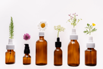
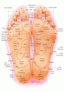
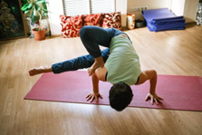
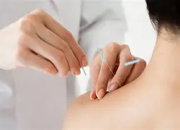
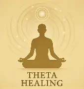
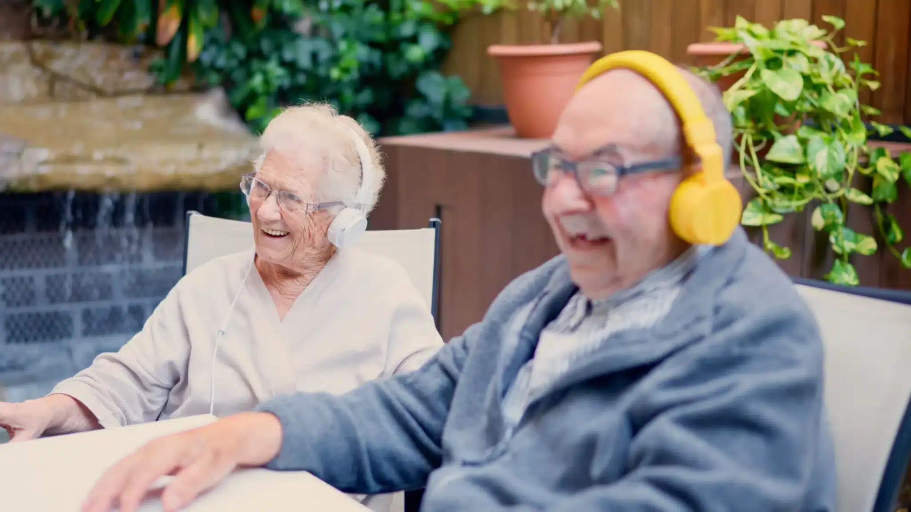
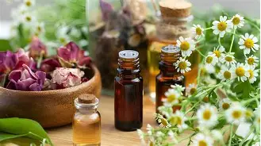

EXAMPLES OF ALTERNATIVE THERAPIES

Flower Essence Therapy
Concept: Flower essence therapy uses essences prepared from flowers and is mainly used to support emotional balance and promote well-being.
Scientific evidence: Flower essence therapy is part of the Integrative and Complementary Practices offered by Brazil’s Unified Health System (SUS). However, the available scientific evidence has not consistently demonstrated that flower essences are effective for treating specific diseases.
Age restrictions / who can receive it: There is no universal minimum age. Use by children, pregnant people, and people taking medication should be assessed individually. Flower essences should not replace necessary healthcare treatments.
Application: The essences are generally administered as drops, according to the product and the guidance received.
Who administers it: Professionals trained in the practice, respecting the regulations of their profession. Guidance should take into account the safety of the person receiving the product.

Reflexology
Concept: Reflexology, also called reflexotherapy, uses stimulation and massage on certain areas of the body, especially the feet and hands, aiming to promote relaxation and well-being.
Scientific evidence: There are studies on possible benefits of reflexology, mainly related to relaxation and the relief of some symptoms. However, there is not enough evidence that reflex points can treat diseases in specific organs.
Age restrictions / who can receive it: It may be considered for different age groups. People with injuries, infections, changes in sensitivity, or circulatory problems should receive a prior assessment.
Application: It is performed through pressure and massage on specific points, mainly on the feet and hands.
Who administers it: A professional trained in reflexotherapy, observing the limits of their professional qualifications.

Yoga
Concept: It is an ancient practice originating in India that combines physical postures, breathing exercises, and meditation, seeking to integrate physical and mental aspects.
Scientific evidence: Studies indicate that yoga may contribute to well-being, stress management, relaxation, sleep, and some aspects of physical health. Its benefits may vary depending on the person and the condition studied.
Age restrictions / who can receive it: It can be practiced by children, adolescents, adults, and older people, with adaptations. People with physical limitations or specific health conditions should seek professional guidance before performing more demanding postures.
Application: It involves physical postures, breathing exercises, relaxation, and meditation, adapted to the participants’ needs.
Who administers it: Qualified yoga instructors or teachers. When offered as healthcare, applicable professional qualifications and responsibilities must be respected.
Hypnotherapy
Concept: Hypnotherapy uses hypnosis as a therapeutic resource. The technique seeks to produce a state of focused attention and relaxation that can be used as part of certain healthcare approaches.
Scientific evidence: Hypnosis has been studied in some areas of healthcare and may help in certain situations, such as pain management. Results depend on the condition being treated and how the technique is used.
Age restrictions / who can receive it: Use depends on the person’s age, the purpose, and their individual conditions. For children and adolescents, appropriate assessment and parental or guardian involvement are required as applicable.
Application: It uses concentration and focused-attention techniques, generally accompanied by therapeutic suggestions, according to the purpose of the session.
Who administers it: A licensed and trained professional qualified to use hypnosis within the limits of their profession and training.
Dowsing
Concept: Dowsing is a practice that uses objects such as pendulums and rods to attempt to identify supposed energies, vibrations, or characteristics present in people, objects, and environments.
Scientific evidence: There is no robust scientific evidence that dowsing can detect energies or diagnose health problems. Instrument movements may occur due to the ideomotor effect, which is related to small involuntary movements by the person themselves.
Age restrictions / who can receive it: There is no proven medical indication or established age group for treating diseases with dowsing. It should not be used to diagnose health problems or replace a professional assessment.
Application: Practitioners use instruments such as pendulums and rods to attempt to identify supposed energies or characteristics of environments and objects.
Who administers it: Dowsing practitioners. The practice is not equivalent to a diagnosis performed by a healthcare professional.
Biomagnetism
Concept: Biomagnetism is a practice that uses magnets placed on certain parts of the body. Its practitioners claim that magnets can help balance the body and treat some health problems.
Scientific evidence: There is no robust scientific evidence demonstrating that biomagnetism can balance the body’s pH or eliminate microorganisms. The practice is also not among the 29 Integrative and Complementary Practices currently offered by the SUS.
Age restrictions / who can receive it: There is no proven clinical indication for treating diseases with biomagnetism. Children, pregnant people, and people with implanted medical devices should exercise particular caution with magnets and seek healthcare guidance.
Application: Practitioners place magnets on certain areas of the body, claiming to seek balance in the body. The claimed therapeutic effects have not been proven.
Who administers it: Practitioners of the technique. This does not replace care from qualified healthcare professionals.

Acupuncture
Concept: Acupuncture is a technique of Traditional Chinese Medicine that uses very thin needles inserted into specific points on the body.
Scientific evidence: Acupuncture is one of the most studied integrative practices and may help mainly in the treatment of some types of pain. Its effects vary depending on the condition being treated. In Brazil, it is part of the Integrative and Complementary Practices offered by the SUS.
Age restrictions / who can receive it: It may be indicated for adults, older people, and, in specific situations, children and adolescents. Use requires individual assessment, especially for people with blood-clotting disorders, those taking anticoagulants, or those with specific medical conditions.
Application: Thin, appropriate needles are inserted into specific points on the body, with strict hygiene and safety measures.
Who administers it: A healthcare professional trained and qualified to perform acupuncture, according to the regulations applicable to their profession.

ThetaHealing
Concept: ThetaHealing is a practice based on meditation, visualization, and spiritual beliefs. Its practitioners claim that the technique can help change beliefs and thoughts through access to the so-called theta brain waves.
Scientific evidence: There is not enough scientific evidence to demonstrate that ThetaHealing can “reprogram the subconscious” or produce the therapeutic effects claimed by its practitioners. The practice is not among the 29 Integrative and Complementary Practices of the SUS.
Age restrictions / who can receive it: There is no proven clinical indication or established age group for treating diseases with ThetaHealing. Children and adolescents need appropriate protection, and the practice should not replace healthcare.
Application: It generally involves meditation, visualization, and reflection exercises related to personal and spiritual beliefs.
Who administers it: Facilitators or practitioners trained in the technique. This training, by itself, is not equivalent to professional healthcare qualifications.

Music Therapy
Concept: Music therapy uses music and elements such as sound, rhythm, and melody therapeutically. It can be used to address physical, emotional, cognitive, and social needs.
Scientific evidence: Studies indicate possible benefits of music therapy in different situations, including reduced anxiety and agitation in some people with dementia, as well as support for social interaction, emotions, and well-being. Results vary depending on the condition and intervention used.
Age restrictions / who can receive it: It can be used with children, adolescents, adults, and older people, according to each person’s needs. The approach should be adapted to the patient’s condition and ability to participate.
Application: It may involve listening to music, singing, instruments, music creation, and rhythmic activities, individually or in groups.
Who administers it: A music therapist with specific training in the field. Practice should respect the patient’s needs and professional boundaries.
Herbal Medicine
Concept: Herbal medicine uses medicinal plants and their derivatives to help prevent, treat, or relieve certain health problems.
Scientific evidence: Effectiveness and safety vary according to the plant, the product, and its purpose. Some plants have studied therapeutic uses, but not all have proven effectiveness and safety. Natural products can also cause adverse effects and interact with medications. Herbal medicine is part of the Integrative and Complementary Practices offered by the SUS.
Age restrictions / who can receive it: Use depends on the plant, the product, and the purpose. Children, pregnant or breastfeeding people, older people, and people taking medication need professional guidance because contraindications and interactions may exist.
Application: It uses medicinal plants and preparations such as teas, extracts, and herbal medicines, according to the product and appropriate guidance.
Who administers it: Guidance may be provided by qualified healthcare professionals according to their professional responsibilities. Prescribing and dispensing must follow applicable regulations.

Aromatherapy
Concept: Aromatherapy uses essential oils extracted from plants as a complementary resource, generally through inhalation or other forms of application, aiming to promote well-being.
Scientific evidence: There are studies on the possible effects of some essential oils in situations such as stress, anxiety, pain, and sleep. However, results vary depending on the oil and the condition studied. Aromatherapy should not replace medical treatments when they are necessary.
Age restrictions / who can receive it: Use depends on the essential oil, concentration, and method of application. Children, pregnant or breastfeeding people, and people with asthma, allergies, or sensitivity to aromas require special care.
Application: It may involve inhaling aromas or topical use of properly prepared products. Concentrated essential oils should not be ingested or applied directly to the skin without appropriate guidance.
Who administers it: Qualified professionals trained in aromatherapy, respecting the regulations of their profession and the precautions necessary for the safe use of essential oils.